ME 326: Collaborative Robotics | Stanford University | Winter 2026
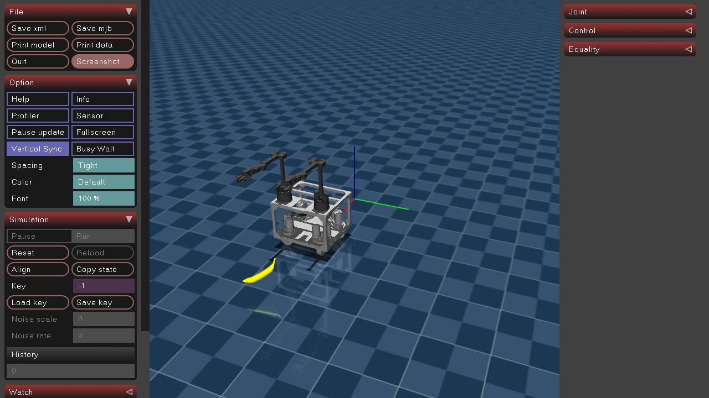
We built an intelligent robotic assistant using the TidyBot++ bimanual mobile manipulator. Our system interprets natural language commands — via voice or text — to perceive its environment, plan actions, and autonomously execute manipulation tasks. The robot can retrieve objects on command, perform multi-step sequential tasks, and open articulated furniture like drawers.
"Find the apple and bring it here." Voice command triggers a full pipeline: scan the scene, locate the object, navigate to it, pick it up, and return.
"Find the red apple and place it in the brown basket." Multi-step natural language commands that chain perception, navigation, and manipulation.
Open and close a drawer using bimanual coordination, demonstrating dexterous manipulation of articulated objects.
Our system follows a modular perception-planning-control architecture, orchestrated by an LLM-based planner.
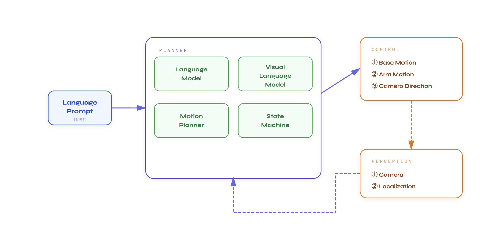
The ROS2 node graph showing how the StateManager orchestrates Base, ArmPlanner, Vision (SAM3), and Voice nodes via topics and service calls.
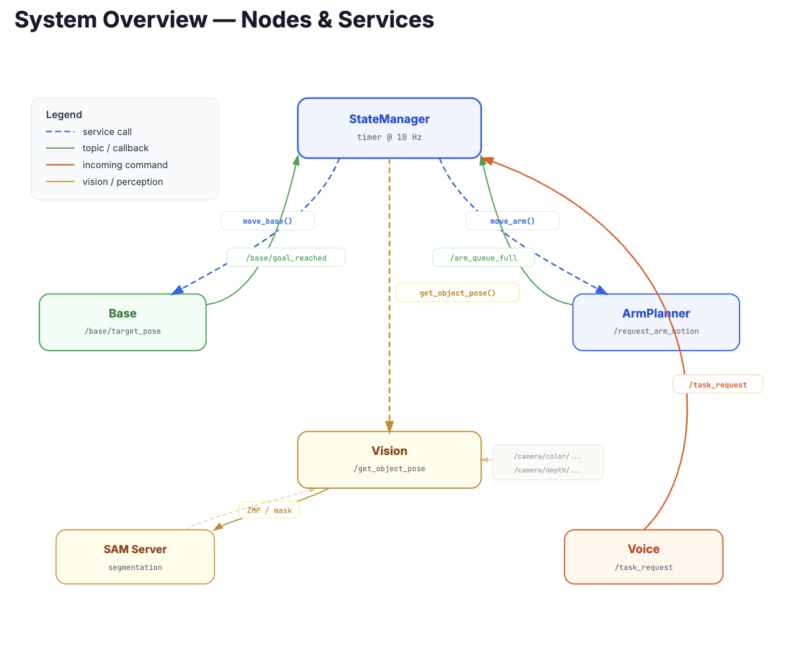
We use Segment Anything Model 3 (SAM3) combined with the Intel RealSense D435 depth camera to detect and localize objects in 3D space. Given a text prompt (e.g., "red apple"), the vision pipeline segments the object in the RGB image and projects it into a 3D point cloud to obtain a world-frame pose.
PCA analysis on the segmented point cloud extracts the major and normal axes, constructing a grasp pose aligned to the shortest width of the object at its centroid.
The camera is mounted on a 2-DOF pan-tilt unit, enabling the robot to scan its environment by sweeping across the scene.
Natural language commands are processed by a Gemini-based planner that decomposes high-level instructions into a sequence of robot actions through automatic function calling. Available tools include scan, navigate_to, pick_up, place_at, open_door, and move_arm.
Users can interact via text or voice (using the Gemini Live API for real-time speech understanding). A ROS2 voice node passively listens for an activation phrase ("Hey Robot!"), then actively records the request via Google Cloud Speech-to-Text.
The planner orchestrates task execution through a state machine that sequences perception, navigation, and manipulation actions, with error handling (retry on failure, replan after max retries).
The 3-DOF holonomic base (Phoenix6 motors over CAN) performs 3-phase position control to goal poses, publishing when the goal is reached. Supports both relative and world-frame commands.
An action queue service processes high-level commands (Grab, Release, Move) by decomposing them into IK-solved waypoint sequences. Non-blocking service calls allow smooth chaining of multi-step motions.
Coordinated gripper open/close with force feedback for reliable grasping. Both arms can be controlled independently or in coordination for tasks like drawer articulation.
ROS2 service: given a text prompt, SAM3 segments the object and PCA analysis on the 3D point cloud yields a grasp pose. For Task 3, an additional "shiny gold knob" prompt localizes the drawer handle.
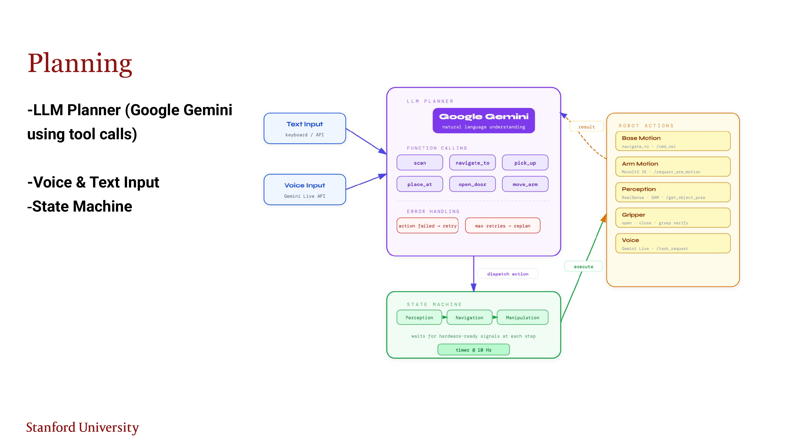
Google Gemini with automatic function calling dispatches actions to a state machine that waits for hardware-ready signals at each step. Error handling retries failed actions and replans after max retries.
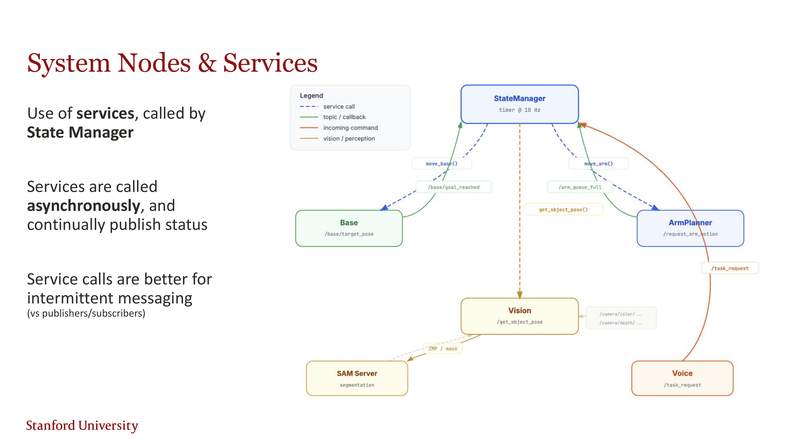
A ROS2 node with Google Cloud Speech-to-Text passively listens for an activation phrase, then actively records the user's request and matches it to a task for the State Manager.
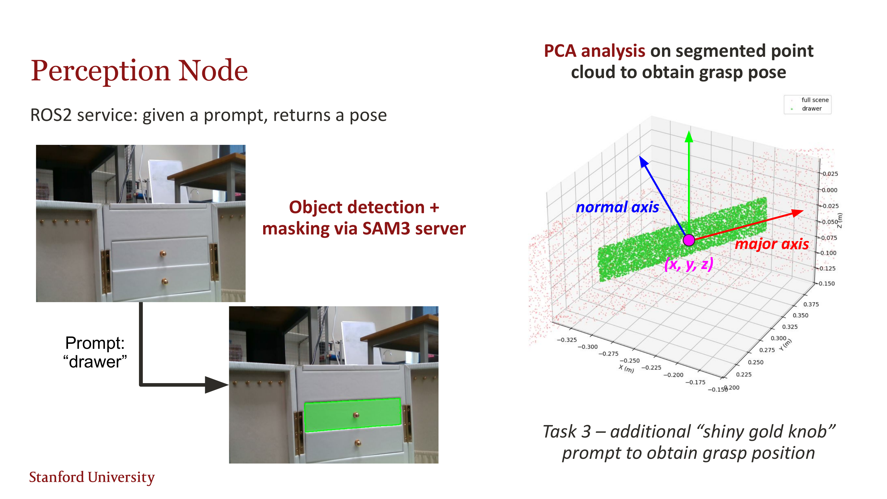
The state machine for sequential pick-and-place tasks, with event-driven transitions based on base_ready and arms_ready signals and grasp retry logic.
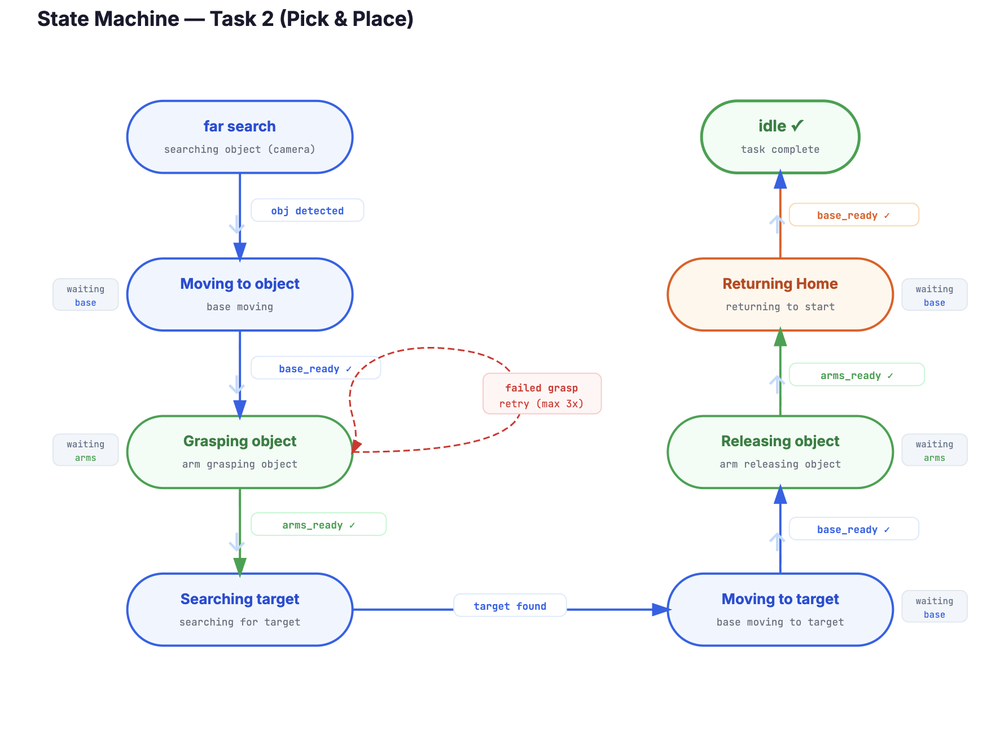
The state machine for opening drawers, with handle detection retry and grasp failure recovery.
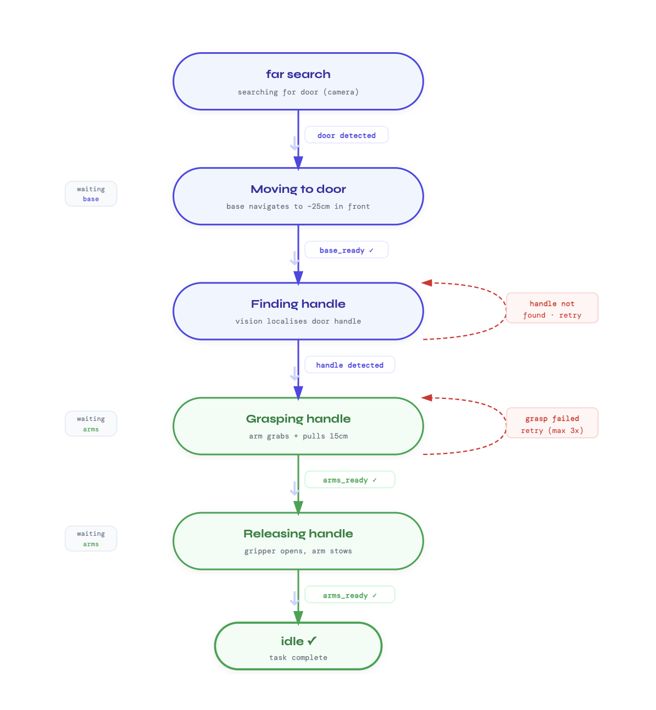
The robot successfully interprets voice commands to locate, navigate to, and retrieve target objects in a cluttered environment.
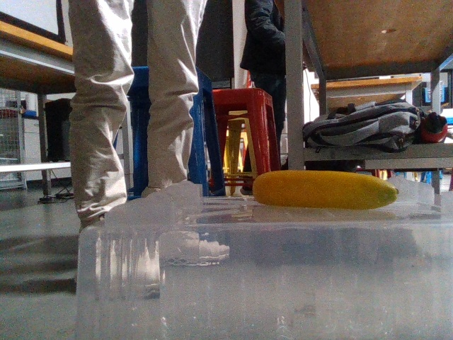
Given multi-step natural language instructions, the robot decomposes and executes chained actions.
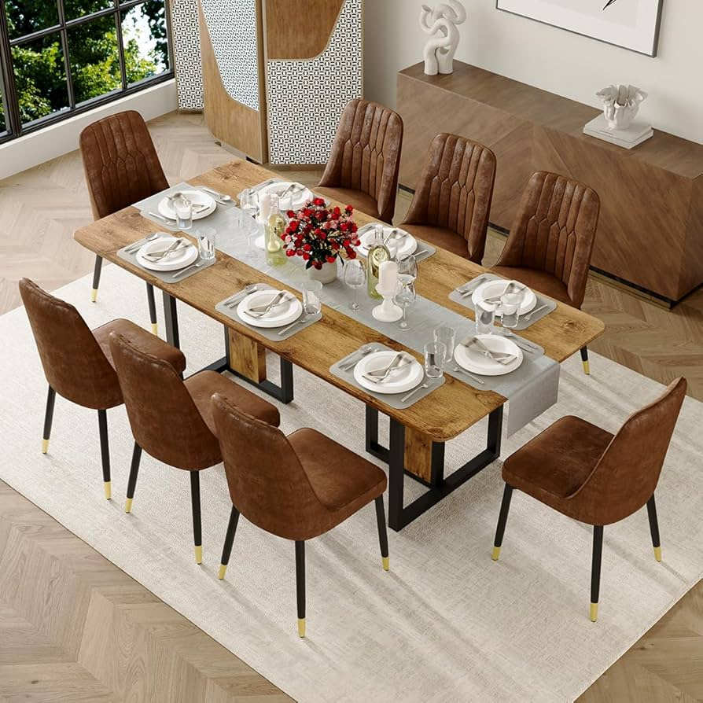
The robot opens a drawer using one arm, demonstrating dexterous manipulation of articulated objects. Key design considerations include handle geometry, static/kinetic friction during pulling, and constraining the end-effector along the drawer rail axis to avoid lateral torque.
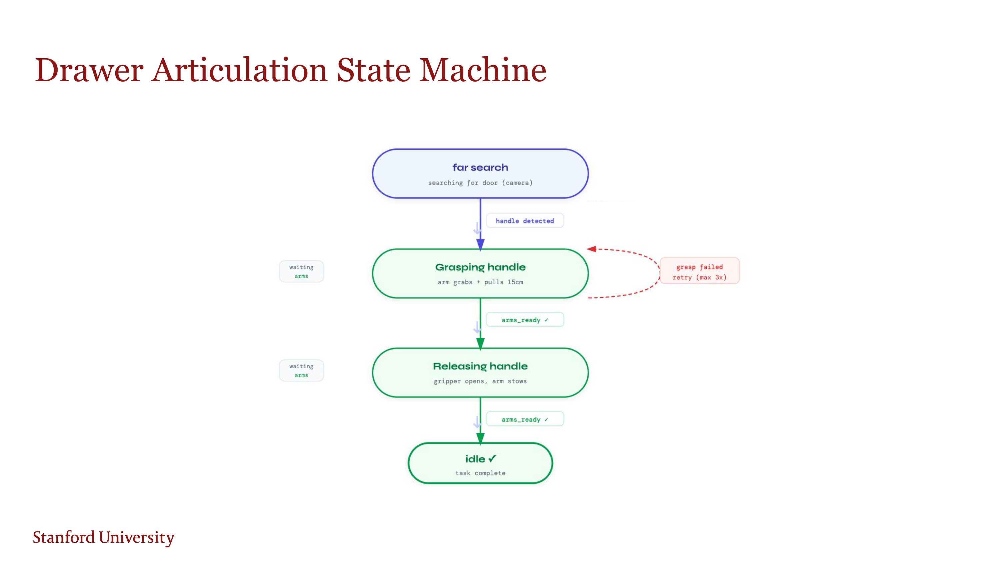
Five non-blocking service calls from the high-level planner, with the action queue continually publishing queue length to indicate completion.
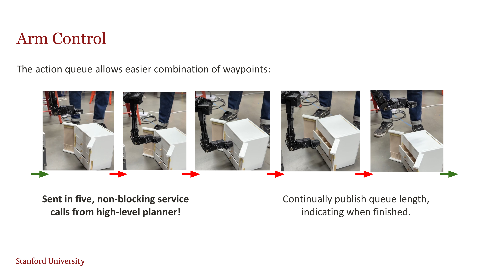
MuJoCo Simulation
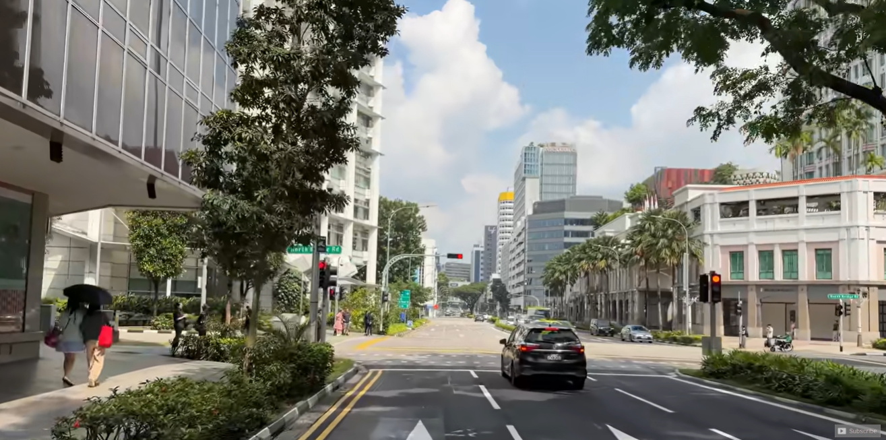
Real Hardware Environment
Integrate GraspAnything for 6-DOF grasp pose prediction. Add force feedback and tactile sensors for more reliable manipulation.
Real-time failure detection via memory or a VLA planner to auto-recover if actions fail, reducing the need for manual intervention.
Safety-critical and robust SLAM with onboard LiDAR for obstacle avoidance and persistent environment mapping.
Extend dual-arm coordination to folding, packing, and tool use tasks.
Hand objects to humans, respond to gestures, operate in shared spaces. Intent estimation for anticipating human needs.
Learn manipulation skills from human demonstrations via behavior cloning, imitation learning, ACT, and diffusion policy.
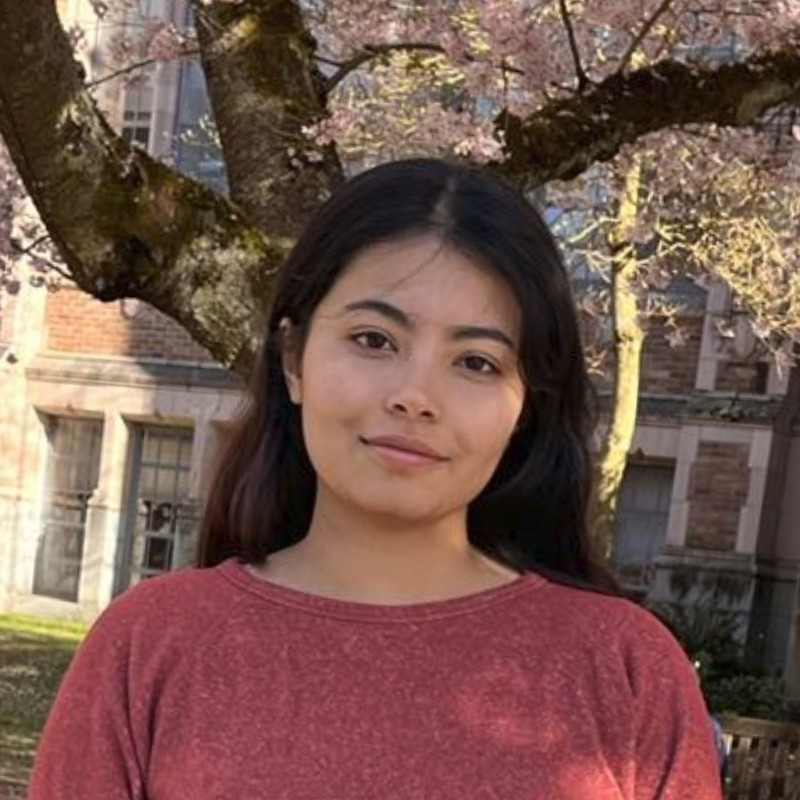
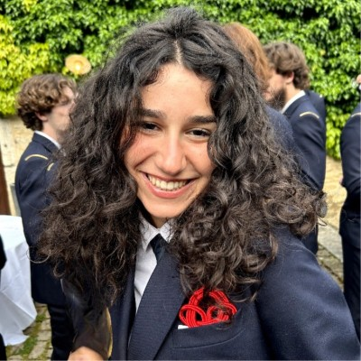
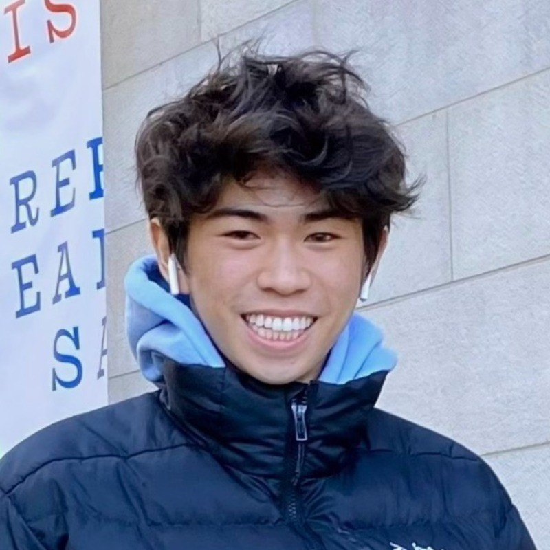
Course: ME 326 Collaborative Robotics, Stanford University, Winter 2026
Instructor: Professor Monroe Kennedy
GitHub: github.com/ChristopherLuey/collaborative-robotics-2026